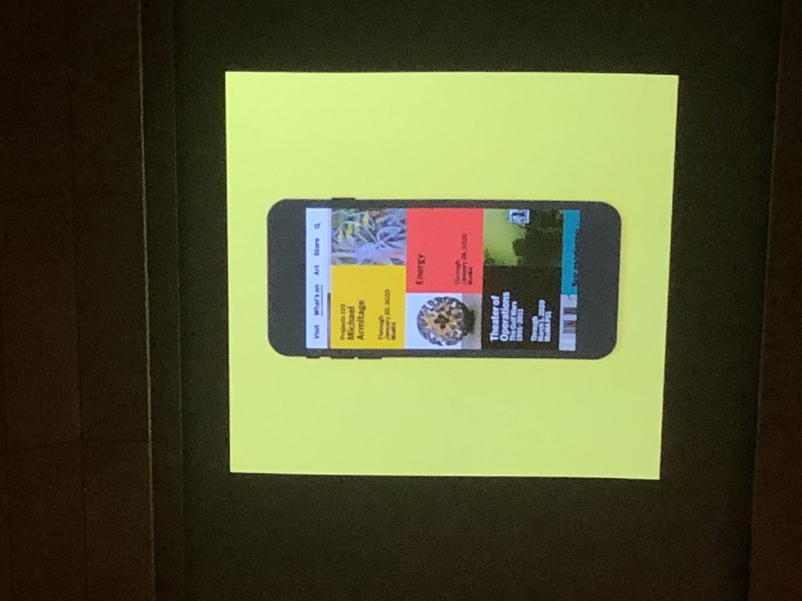
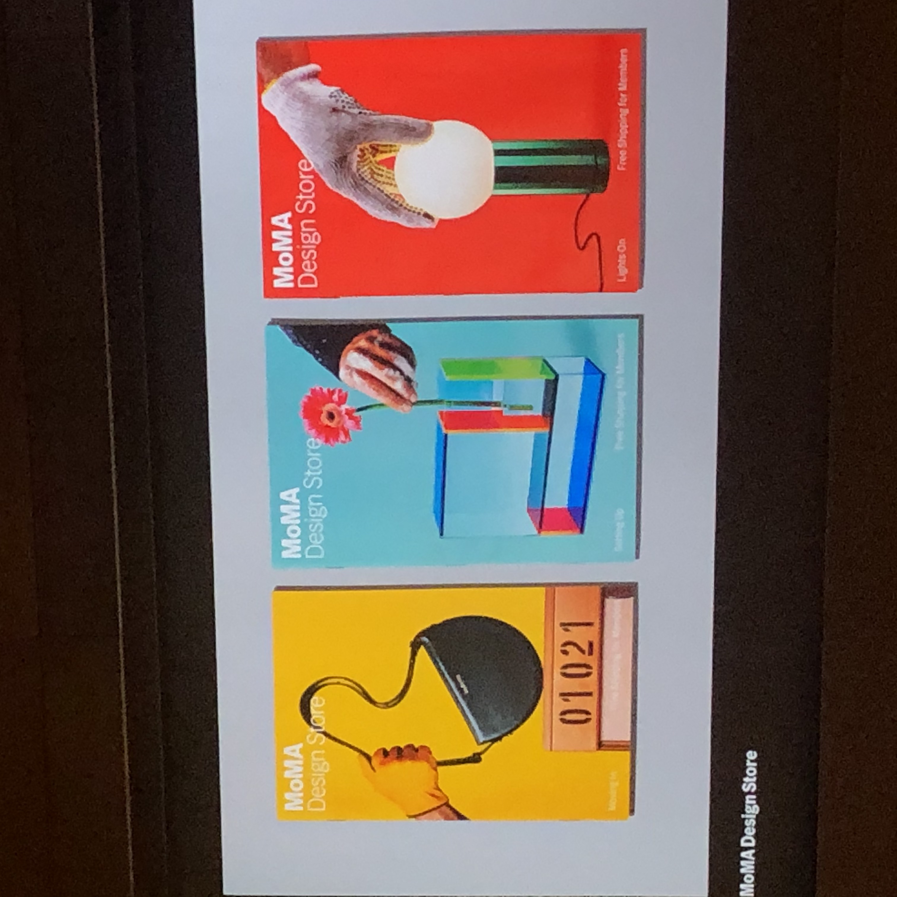
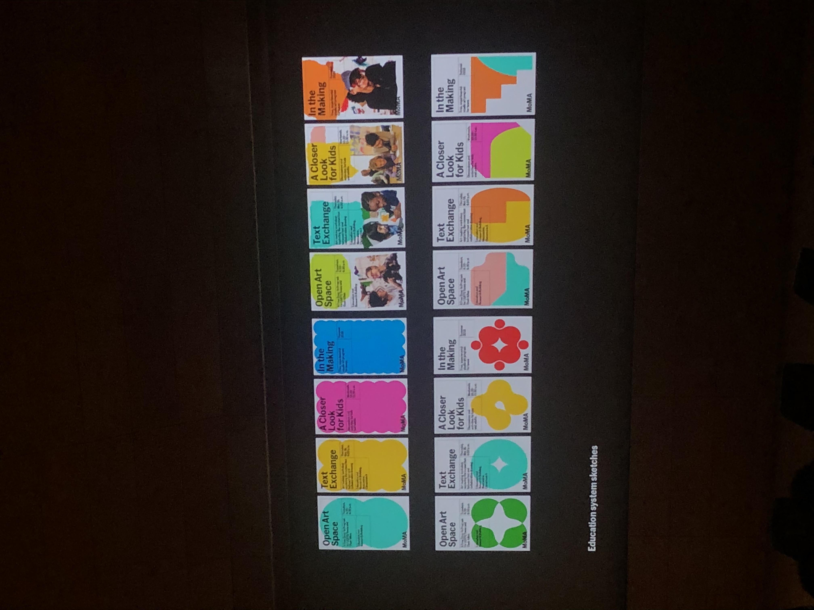
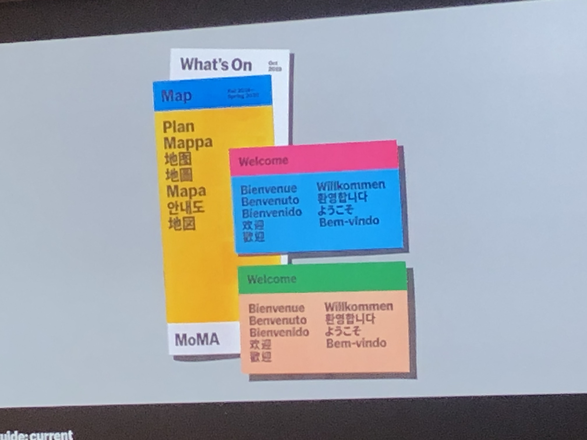
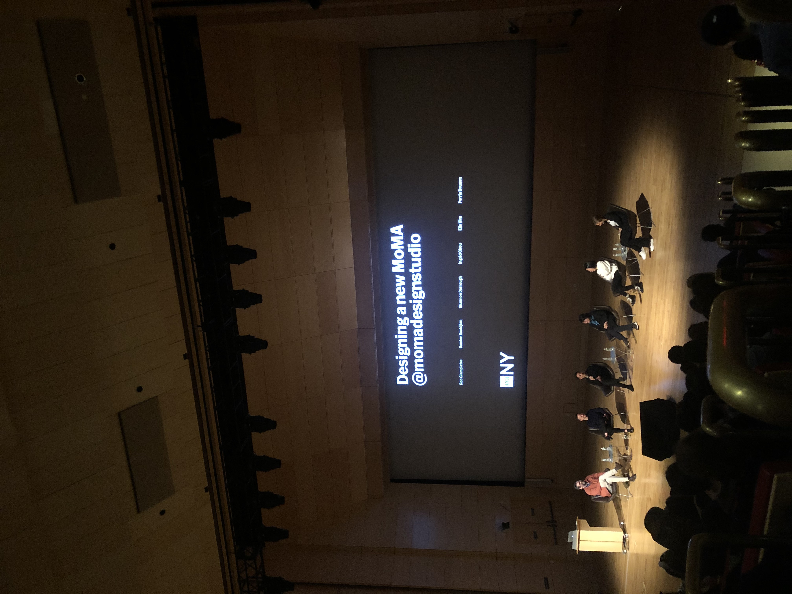

New Moma
"The new system employs prominent use of the MoMa logo as a graphic deice, dramatic cropping and juxtapositions of artwork, and a brighter color palette to create a bold, contemporary image." - Pentagram
4개월 간의 내부 공사를 드디어 끝내고 뉴욕현대미술관(MoMA, 이하 모마)이 새롭게 단장한 모습을 공개했다. 1929년부터 뉴욕을 현대미술의 중심지로 자리매김하게 한 모마는 앞으로도 그 역할을 지속하기 위해 대대적인 재건축을 감행했다. 4억 5천만 달러의 경비를 들인 이번 리노베이션을 통해 원래 크기의 30%나 면적이 넓어졌다. 1천여 점의 작품들과 함께 말이다.
게다가 이전의 단조로운 브랜딩에서 완전히 탈바꿈한 도전적인 브랜딩 디자인에 대한 변화는 모던 미술관에 걸맞게 혁신적이고 진취적인 색을 보여주고 있다. 운 좋게도 학교에서 모마의 새로운 브랜딩을 맡았던




